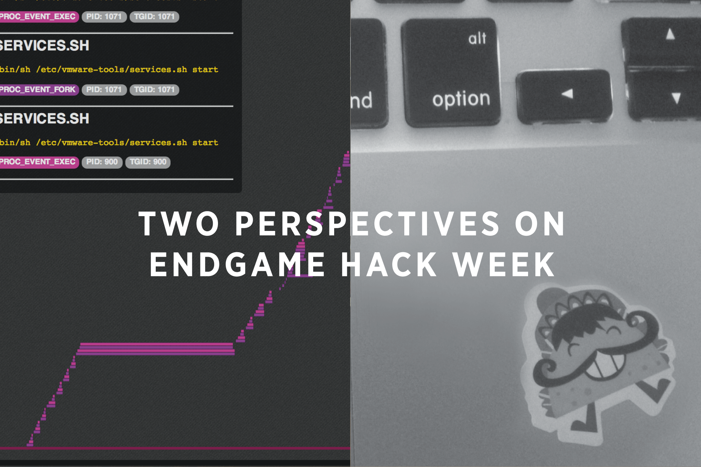

How We Win Hack Week

by John Herren, Director of Product Design
With outstretched arms and a voice just a tad too loud, I shout, “Welcome to Hack Week!” As a fitting coda to Black Hat and DEF CON wrapping up in the previous days, an enthusiastic group of Endgame software engineers, security researchers, designers, data scientists, devops engineers, architects, and yes, even a few managers and company executives have gathered together in a place where we can all concentrate on our ideas and the Hack, devoid of any outside distractions and temptation to break focus. Literally, we are in the middle of the desert; specifically, The Palms Hotel and Casino in Las Vegas.
In our doublewide conference room, still heavy with the lingering aromas of our breakfast buffet combined with what could only be Red Bull, we’ve just heard our CEO and CTO speak on the importance of innovative culture and the value of looking forward. We’re reminded of the difference between invention and innovation and how there always exists the opportunity to make our products better. Now it’s my turn to speak. I’m playing the role of hype man and evangelist. In contrast to the executives’ strategy points, my intentions are a bit more tactical: how to win hack week.
To call it a hack week is a bit generous. This purposefully abridged gathering is more like hack-two-days. After the morning discussion, we have just about forty-eight hours before the klaxon call of hands off keyboard, minus any time reserved for sleep, or blackjack, or rooftop drinks, or yet another steak. As software engineers, we’re taught to embrace constraints, timetables included. We’re also notorious for over-estimating our abilities when it comes to timelines. I’m interested to see how the short timeframe affects our projects with the addition of all of the variables that this odd city has to offer. More poetically: Beer and Coding in Las Vegas.
The material goal of Hack Week is to produce something useful. The official judging criteria echoes this and is broken into four aspects. The first of these is potential and longevity: will the project find its way into a new product, feature, conference paper, or open source release? Second is innovation. How new and exciting is the project? How does it solve a problem better? Third, how well does a project solve a real world security problem? And finally, how functional is your hack? How well is it implemented and does it actually operate? These are great criteria and set us up for some healthy competition. Aside from this, only a couple more rules are in place: the deadline for coding is high noon on Wednesday, and team sizes should be two to four people. By the time we arrived in Vegas, we’d hashed out our ideas on the company wiki and recruited our team members.
I begin my rant with a few pointers. Scope your project carefully. The teams are small, and the timeline is tight. The Internet connection is fast, but the action at the craps tables is faster. Concentrate on the important part of your project and borrow from Github liberally for the rest. Don’t let yourself get stuck for too long. Ask your teammates for help when you do get stuck. This is a great rule of thumb for everyday development work, but on an accelerated hack project, you benefit greatly when failing fast and relying on your team’s collective experience. To prove this point, I throw some rapid-fire questions at the group to show the diversity of knowledge among our team. I ask for open source components we can use to solve common problems:
“I need to cluster some data points!”
“I need a CSS framework for grid layouts!”
“I want to update a web page in real time!”
“I want to display a time series!”
“I want to do sentiment analysis on a data feed!”
And just so everyone can get involved,
“I need to store and access a thousand rows of data!”
I can’t stump these folks. They’re shouting answers back as soon as I can get the questions out.
“D3!”
“Socket.io!”
“Scikit!”
“Stanford has… some library!”
A program manager even chimes in “SQLite!” for that last question.
At this point I’m hopping around the room awarding airplane bottles of Jaegermeister and Fireball cinnamon whiskey for correct answers, and when those are all gone, some anthropomorphized scratch and sniff stickers of tacos. They have eyes, mouths, mustaches, sombreros, and guitars. They smell like cumin and stale tortillas.
You can feel a great energy in the room building up. We believe in ourselves and we can solve any problem.
After this silliness, I reiterate the criteria for the competitive win, but my main point is to talk about the real win, the team win. The cultural win. The kind of win that makes the time and resources that go into this production worth it for every stakeholder, even if all of our projects are complete duds.
I stress the importance of the presentation. Spend time on preparing your talk! Tell a story, and provide context and background. Dumb it down for the least technical person in the room (and yes, someone volunteered to serve that role). Then, dumb it down some more. Only then are we ready for your demo.
The goal of Hack Week is a collective teaching and learning. We learn about ourselves, and how we work together, how we solve problems, and how we react and support one another when we fail to solve problems. To win Hack Week, when we give our twelve-minute presentations, we must reveal that journey as much as we show off the bytes and pixels we manipulate:
How did you come up with your idea?
What was your methodology?
What tools did you use?
What did you try that was different?
What worked, and what didn’t work?
What did you learn?
We win Hack Week by teaching that experience. This is a cultural goal of any company, but just as we can accelerate writing code during Hack Week, so can we with fusing our culture.
The next few days were frenzied. The four large, portable whiteboards were quickly commandeered and marked up with checklists, diagrams, and even formal user stories. Some of us pulled all-nighters. Some went out for Japanese curry dishes. Some hacked away persistently with headphones. Another found cookies. The energy never subsided. I caught a frontend engineer whisper to his team, with wide eyes and raised brows, “guys, I want to just absolutely crush this thing.”
Ultimately, team Endgame won Hack Week. The projects presented were varied, and all of them interesting enough for lively, inquisitive, and deep Q&A sessions. They included exploration tools for DNS data, large-scale honeypot deployments and analysis, mobile OS process visualization, and a complete lightweight overhaul of an existing Endgame product. A recently-hired UX designer implemented a solo project, an onboarding application for new hires, which rivaled any of the minimum viable products you’d see from a funded startup on Hacker News. Over the two days, one of our data scientists learned the Angular JavaScript framework, and another frontend engineer learned about process threads on Android. Some of the hacks will find their way into product features. Others will become internal tools. Some will never see the light of day but will prompt discussions for new ideas. Hack Week was an amazing opportunity to have fun, teach, and learn, and I’m already looking forward to the next one. For us, what happens in Vegas stays on Github!
Want to hear more about Endgame Hack Week? Read Andrea Limbago’s perspective here.
Endgame is always looking for great talent to join the team. If you enjoyed hearing about Endgame Hack Week, please take a look at our job openings to learn more about careers at Endgame.